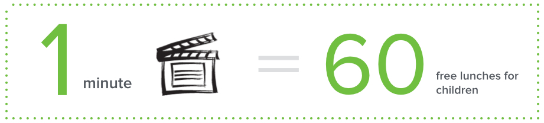

We are launching in May 2014.
OneWay is an everyday philanthropy campaign initiated by a group of Chinese students overseas.
This summer, we ask young people overseas contribute simple actions (social media likes/shares, taking a photo/video) in exchange for free lunch (donated by companies) for starving kids in China.
We are launching in May 2014.
No need to donate a penny, take simple actions and
the donations will be made by our participating companies.
The key concept of everyday philanthropy is to involve as many people as possible. There are 3 ways to join us:

Support us on social media (Facebook, Renren, Weibo, WeChat)

＃Discover China around the world#Take a photo of anything related to “China”

＃Document your life in 1 min＃
Share your positivity through a 1 min video
If you are a social media guru, like and share OneWay on social media.
Facebook Like

Weibo Like/Share

Renren Like

WeChat Like

WeChat ID：just1wayPublic Platform：单行道微公益
For every like or share you contribute, our participating companies will donate 1 free lunch.
Discover China around the world.
Discover things around you related to the keyword “China”, snap a photo and share on Weibo through #我在世界发现中国＃, @单行道微公益 .
For each photo you take on #我在世界发现中国＃, our participating companies will donate 10 free lunches.
Use your creativity, record the positivity in your life with a one-minute video.
Suggestions：
1. Begin with a bried self-introduction.
2. End with "This is how I support OneWay, and you?"
3. No longer than 1 min. Everything else is up to you!
Share the video with us through email/dropbox to contact@danxingdao.org
For every video you record, our participating companies will donate 60 free lunches

Our own way of supporting OneWay: Bike across America in summer 2014.
2 months, 3800 miles, crossing 11 states, from San Francisco to Washington DC.

Free Lunch for Children is the exclusive charity partner of OneWay
As one of the most well-known charity program in China, Free Lunch for Children was founded by 500+ journalists from leading Chinese press, It encourages 50 cents of donation everyday to provide a free lunch for children in impoverished rural areas. As of December 2013, it has raised more than 11.4 million USD. More than 77,000 children from 350 schools in impoverished areas no longer suffer from hunger.


Free Lunch for Children is just one example of many great philanthropic causes
that are bringing positive changes in China.
"Never doubt that a small group of thoughtful, committed citizens can change the world. Indeed, it is the only thing that ever has."
- Margaret Mead

I grew up in the cities, so the experience as a volunteer teacher in rural China has a lifelong impact on me. During my six visits to rural China, not only did I experience the challenges of rural lifestyle and the hardships of kids going to school, but I also realized how incapable I was to offer my limited help. Having lived in the US for almost six years, I never forgot those things I observed in rural China and always wanted to do something.
－Zhang Jiangyang

From rescuing homeless cats and organizing animal welfare educational events, to volunteer teaching in rural schools, to currently learning and practicing conservation education, I've always been hoping that the future generations of us and our fellow creatures will have a better living environment. The world is not perfect, and we all sometimes feel small and insignificant. However, if more people are willing to turn compassion into action, together we probably can bring positive changes to the world.
－Yao Lili

Most people do things for a proper reason, but I have always been motivated by sudden moments. I feel uncomfortable when I saw a photograph of starving kids waiting for food. I never hesitate to devote myself even if the things will only bring about subtle changes. Just like being part of OneWay, every small effort counts.
－Zhang Chenchen
When you have brave ideas, act while you can.
Q：I’m not a Chinese student overseas. Can I still join OneWay?
A: Absolutely. Although we mainly speak to Chinese students overseas, we definitely welcome anybody to join us.
Q: How can you guarantee every action I take will turn into free lunch for children?
A: We have signed donation agreement with participating companies. As a result, for every participant's action, the participarting company will donate the corresponding amount of free lunches to "Free lunch for Children" campaign.
Q: Why do you choose "Free lunch for children" campaign as partner? Would you make public where the donations eventually go?
A："Free Lunch For Children" campaign is one of the most influential charity in China with great transparency in its donations. We hope to raise awareness of philanthropy in China among student overseas and young professionals. There are many other outstanding charities in China as well, but "Free Lunch For Children" is a great example to start with. All donations are listed on the official website of "Free Lunch For Children". Each Free Lunch school is required to open up a sina Weibo account and post how they used the money.
Q: Which route are you guys taking for bike ride?
A: For this trip, we’ve chosen the route of Wester Express and part of TransAmerica Trail (starting from Pueblo, CO) from Adventure Cycling Route Network. Our average mileage per day will be 60-70 miles with an elevation of 0-6000 feet.
Q: When does the whole campaign start and how long does it last?
A: The OneWay campaign will officially launch in May 2014 and will end in September 2014.
Q: I won’t be able to join the bike team, how can I support OneWay?
A: OneWay encourage everyone to start with something small. There are three ways to join us apart from the bike team: 1. The simplest way: “Like”/share OneWay on social network/media. 2. Take a photo of you cooking/working out/volunteering and @OneWay on Weibo. 3. Make a one-minute video to record your positive energy. (For more details please click here).
Join us this summer.